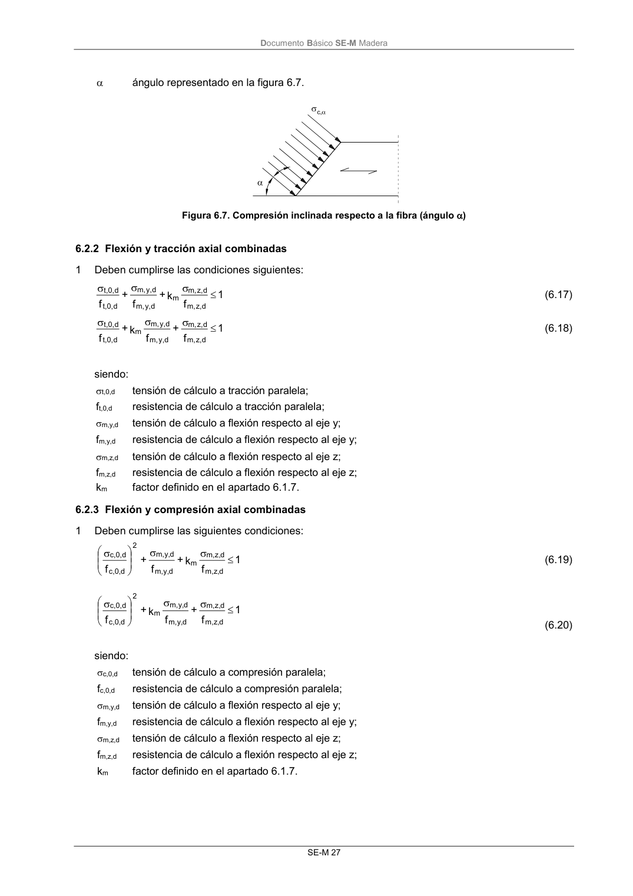

DB-SE-M Madera · edición 2019-12-20 · capa oficial
Documento DB-SE-M-oficial · SHA-256 del PDF 26b5819839ebfda78b0b119c5e76a0a37773b0d763c05688541870075df93718
Página física 33 de 132.
Copia fiel del PDF fuente · Fuente oficial
Ficha de la disposición en la fuente oficial
Formato: Texto de la página (Markdown)
Documento Básico SE-M Madera SE-M 27 ángulo representado en la figura 6.7. Figura 6.7. Compresión inclinada respecto a la fibra (ángulo ) 6.2.2 Flexión y tracción axial combinadas 1 Deben cumplirse las condiciones siguientes: 1 f k + f + f d z, m, d z, m, m d y, m, d y, m, d t,0, d t,0, (6.17) 1 f + f k + f d z, m, d z, m, d y, m, d y, m, m d t,0, d t,0, (6.18) siendo: t,0,d tensión de cálculo a tracción paralela; ft,0,d resistencia de cálculo a tracción paralela; m,y,d tensión de cálculo a flexión respecto al eje y; fm,y,d resistencia de cálculo a flexión respecto al eje y; m,z,d tensión de cálculo a flexión respecto al eje z; fm,z,d resistencia de cálculo a flexión respecto al eje z; km factor definido en el apartado 6.1.7. 6.2.3 Flexión y compresión axial combinadas 1 Deben cumplirse las siguientes condiciones: 1 f k + f + f d z, m, d z, m, m d y, m, d y, m, 2 d c,0, d c,0, (6.19) 1 f + f k + f d z, m, d z, m, d y, m, d y, m, m 2 d c,0, d c,0, (6.20) siendo: c,0,d tensión de cálculo a compresión paralela; fc,0,d resistencia de cálculo a compresión paralela; m,y,d tensión de cálculo a flexión respecto al eje y; fm,y,d resistencia de cálculo a flexión respecto al eje y; m,z,d tensión de cálculo a flexión respecto al eje z; fm,z,d resistencia de cálculo a flexión respecto al eje z; km factor definido en el apartado 6.1.7.
